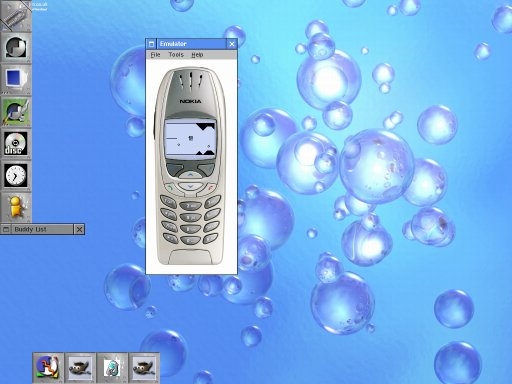

Nokia 6310i Emulator on Linux
The Nokia 6310i MIDP SDK 1.1 is for the Windows platform only (hmmm ... Java is not centered around any OS - the tools used in creating Java programs are .. that sucks!) This is bad when your primary platform is Linux. Nevertheless, it is entirely possible to get (at least) the Nokia 6310i Emulator running in Linux (under wine).
These instructions have been tested on a Slackware 10 box.
- Install Wine. It has probably already been compiled for your distribution - check your media CDs. I am using Wine 20040716.
- Download Nokia 6310i MIDP SDK 1.1 (You must have a valid Forum Nokia account to do so!). This is a 14MB download.
- Unzip the SDK:
unzip -d n6310i n6310i_jme_sdk_v_1_1.zip
- This reveals among other things a Microsoft Windows setup file. Unzip the setup file:
cd n6310i
unzip setup.exe
- Unzip the SDK:
cd InstallerData
unzip Installer.zip
- Copy the SDK to a more permanent place. I store all my Nokia SDKs in /opt/Nokia:
cd C_/MIDP_Emulators
cp -dpR Nokia_6310i_MIDP_SDK_v1_1 /opt/Nokia/Devices
- Delete the installation directory:
cd ../../../../
rm -fr n6310i
- And that's it!
To start the emulator:
cd /opt/Nokia/Devices/Nokia_6310i_MIDP_SDK_v1_1/bin
wine Nokia_Emulator.exe -classpath '/opt/Nokia/Devices/Nokia_6310i_MIDP_SDK_v1_1/lib/classes.zip;/path/to/your/midlet.jar' /path/to/your/midlet.jad
... or use n6310i from J2ME Tools.
Screenshot
So, here it is - running YrthWyrm:

FAQ
- Can I build MIDlets using this SDK?
- Probably - I use the Series 30 SDK to build my MIDlets. I emulate using the Nokia 6310i Emulator.
- Why not just use the Series 30 Emulator?
- For 'normal' usage - yes, by all means use it. But if the MIDlet in question uses some of Nokias classes the Series 30 Emulator might not be sufficient. F.ex. using the drawPixels call on a Series 30 Emulator severely messes up the display whereas it looks good on the Nokia 6310i Emulator.
- What does this mean: err:wave:OSS_WaveOutInit /dev/mixer: Permission_denied?
- You sound is not working. A solution (for Slackware 10) could be:
sudo chmod 666 /dev/sound/mixer
Home